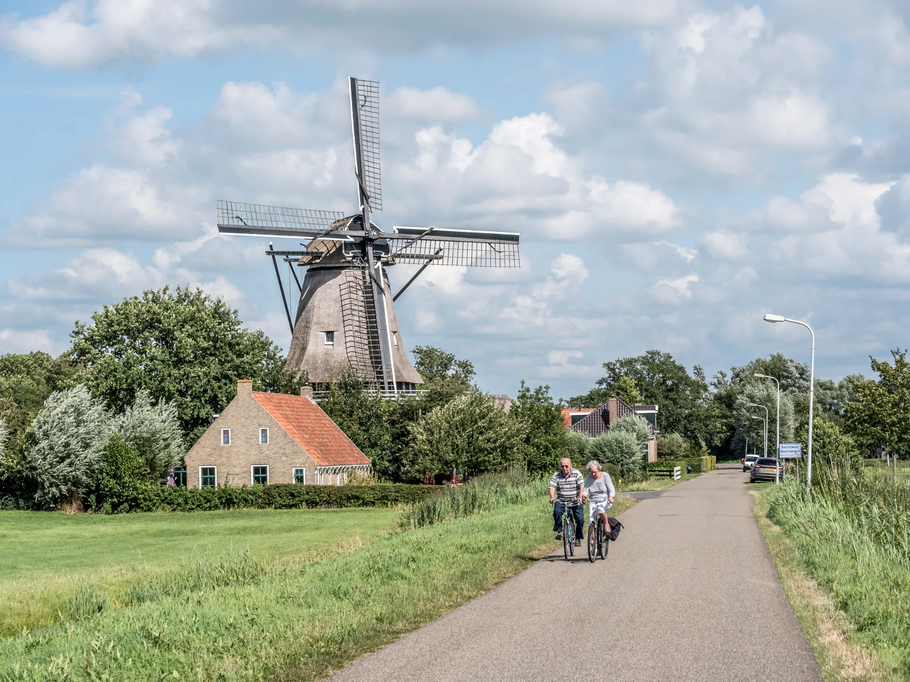

Wandelen vanaf Martenastate
Het park van Martenastate is vrij toegankelijk van zonsopgang tot zonsondergang. Daarbuiten ligt een netwerk van paden door weiland en polder — van een kort rondje voor het ontbijt tot een dagtocht langs de pelgrimsroute.

Klik open voor afstand, tijd & routebeschrijving
Ochtendrondje door het park
Ochtendrondje door het park
Wandel vrij door het landschapspark van Martenastate. Volg de hoofdpaden vanaf de ingang naar het kasteel en terug langs de stinzenflora-velden. Vlak terrein, paden zijn doorgaans goed begaanbaar.
Open route in Maps
Middagwandeling naar Jelsum
Middagwandeling naar Jelsum
Vanaf Martenastate via de Brédyk noordwaarts naar het buurdorp Jelsum (~2 km). Onderweg zicht op weidevogels en de oude kerk van Jelsum. Terug via dezelfde route of via de polderpaden — typisch Fries weidelandschap.
Open route in Maps
Wandeling naar Leeuwarden
Wandeling naar Leeuwarden
Loop via fietspaden en wandelroutes zuidwaarts naar Leeuwarden centrum. Eindpunt: de Oldehove en het Wilhelminaplein. Terug eventueel met de bus (lijn richting Stiens stopt vlakbij Martenastate).
Open route in Maps
Jabikspaad — pelgrimsroute
Jabikspaad — pelgrimsroute
De pelgrimsroute van St. Jabik via Friesland naar Santiago de Compostella loopt langs Túnmanswente — een officieel stempelpunt. Mooie etappes door het Friese landschap. Vraag je pelgrimspaspoort bij Túnmanswente.
Open route in Maps
Elfstedenpad — etappe Oentsjerk → Leeuwarden
Elfstedenpad — etappe Oentsjerk → Leeuwarden
Een etappe van het 300 km lange Elfstedenpad langs alle 11 Friese steden. Vanuit Oentsjerk richting Leeuwarden, passeert vlak langs Martenastate. Gemarkeerd met geel-rode tekens.
Open route in MapsGeleide excursies van It Fryske Gea
Natuur- en fotografie-excursies in en rond Martenastate. Te boeken via het activiteitenprogramma van It Fryske Gea.
Bekijk programmaFietsen in fietsprovincie #1
Friesland scoort vijf sterren — de hoogste beoordeling in Nederland voor fietsen. Het vlakke landschap maakt elk niveau mogelijk, van een uurtje voor de boodschappen tot een meerdaagse tocht langs alle elf steden. Martenastate ligt bij fietsknooppunt 10.

Van een rondje door het dorp tot meerdaags
Jelsum – Koarnjum – Dokkumer Ee
Jelsum – Koarnjum – Dokkumer Ee
Een korte lus die letterlijk vanaf het landgoed vertrekt. Je fietst langs historische staten en stinzen en passeert een oude tuinmanshuisje bij Stiens. Ideaal als opwarmer of voor een halve dag.
Bekijk routebeschrijving
Leeuwarden – Grote Wielen – Dokkumer Ee
Leeuwarden – Grote Wielen – Dokkumer Ee
Combineert een rondje door de Leeuwarder binnenstad met water en weiland richting de Grote Wielen en de Dokkumer Ee. Goed te doen op een halve dag.
Bekijk routebeschrijving
Eetbaar Fryslân: Leeuwarden – Burgum
Eetbaar Fryslân: Leeuwarden – Burgum
Onderweg passeer je zes lokale eetadressen — van streekkaas tot een boerderijterras. Tussendoor stille weggetjes en kleine dorpen. Perfect om een dag rustig aan te doen.
Bekijk routebeschrijving
Polder2Polder
Polder2Polder
Door de zuidelijke polders die door natuurorganisaties beheerd worden. Weidevogels, bloeiende dijken en open lucht. Pak je verrekijker mee.
Bekijk routebeschrijving
De Grote Ronde van Leeuwarden
De Grote Ronde van Leeuwarden
Een grote lus langs historische landgoederen rond Leeuwarden. Voor wie hele dag op de fiets wil en houdt van staten, stinzen en oude bomenlanen.
Bekijk routebeschrijving
Pontjesroute — De 8 van Grou
Pontjesroute — De 8 van Grou
Een acht-vormige tocht door het Friese merengebied met pontjes onderweg — handig om de afstand naar wens in te korten of uit te breiden.
Bekijk routebeschrijving
Marsum – Oentsjerk – Weidum
Marsum – Oentsjerk – Weidum
Een langere ronde rond Leeuwarden langs statige huizen en kleurrijke landgoedtuinen. Voor wie een stevige dagtocht zoekt en zin heeft in cultuur onderweg.
Bekijk routebeschrijving
De Elfstedenroute
De Elfstedenroute
De klassieker langs alle elf Friese steden, officieel startpunt in Leeuwarden. Volledig gemarkeerd. Voor de diehards — neem drie tot vijf dagen de tijd.
Bekijk routebeschrijvingRouteselectie via Visit Leeuwarden — daar vind je meer fietsroutes in de regio.
Knooppuntennetwerk — stel je eigen route samen
Heel Friesland is bedekt met genummerde fietsknooppunten. Pak een papieren kaart bij Túnmanswente of plan online via fietsknoop.nl. Vertrek bij knooppunt 10.
Túnmanswente
Direct op het landgoed, op loopafstand van je tent of kamer. Verse koffie, zelfgemaakte appeltaart, broodjes en een heerlijke theetuin met uitzicht op het park. Begin hier de dag — of sluit er mee af.
tunmanswente.nl →Leeuwarden — onze picks
Tien aanraders in het centrum, van industriële Italianen tot familie-eetcafés. Klik door naar de site om direct te reserveren.
Garage Modern
Modern Italiaans in een industriële zaal. Klassiekers met een eigen draai en af en toe een dragshow in het weekend.
Bekijk & reserveer →Pecorino wijn & eetbar
Plankjes uit Italië en Spanje om met z'n tweeën te delen, met een wijnkaart die past. Klein en intiem, midden in de stad.
Bekijk & reserveer →Double B
Bouw je eigen burger en kies uit een rij speciaalbieren. Op mooie dagen zit het ruime binnenplein vol.
Bekijk & reserveer →ROAST
Verrassingsmenu's van meerdere gangen in een trendy zaal. Beneden zit een cocktailbar voor het aperitief of een nazit.
Bekijk & reserveer →Grand café Post-Plaza
Brasserie in het oude postkantoor — hoog houten plafond, schalen op tafel en klassieke Franse keuken.
Bekijk & reserveer →Fellini
Familiebedrijf voor pizza, pasta en huisgemaakte gerechten. Levendig en gezellig, zonder poespas.
Bekijk & reserveer →Jamuna
Verfijnde regionale Indiase gerechten in een warme, ongedwongen zaal. Fijn als je iets anders wil dan Italiaans of Frans.
Bekijk & reserveer →Restaurant STEEF
Vier, vijf of zes gangen met verrassende smaakcombinaties. Chef-driven en op niveau — reserveer ruim van tevoren.
Bekijk & reserveer →'t Zusje
Tapas-stijl plankjes om mee te delen. Goed voor een lange avond met vrienden of een uitgebreide date.
Bekijk & reserveer →Eetcafé Het Leven
Eetcafé met kindermenu en speelhoek. Eenvoudig, betaalbaar en ontspannen — ideaal als je met de hele familie aanschuift.
Bekijk & reserveer →Selectie via Liefs uit het Noorden — een lokale blog over Leeuwarden.
Friese specialiteiten — niet overslaan
Friese nagelkaas
De échte Friese kaas met karwijzaad. Koop hem bij de kaasboer op de Leeuwarden markt (za) of bij de AH in Stiens. Verplichte souvenir voor thuis.
Oranjekoek
Typisch Fries gebak — zacht, zoet, oranje glazuur. Bij elke bakker te krijgen. Heerlijk bij de koffie van Túnmanswente.
Leeuwarden markt
Elke zaterdag op het Wilhelminaplein — kaas, groente, vis en Friese producten. Combineer met het Fries Museum of de Oldehove. Altijd gezellig.
Vier hoogtepunten in de regio
De afstandenstrip bovenaan deze pagina geeft de complete lijst. Hieronder de plekken die we zelf het vaakst aanraden.